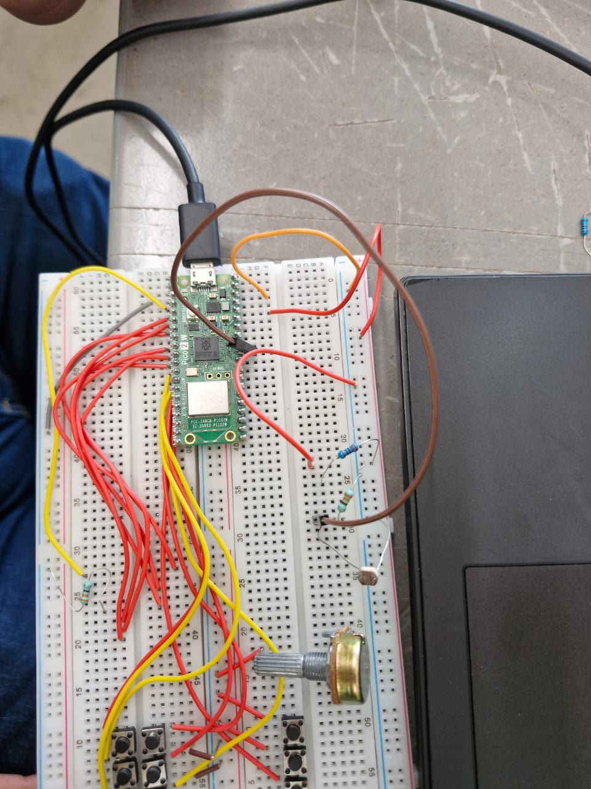
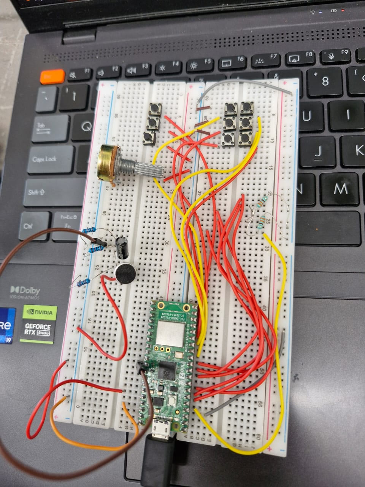

ADC — LDR, Electret Noise Detector, Potentiometer Angle and NTC Temperature
Goal (one sentence): Read analog sensors with the RP2350 ADC: an LDR (EMA-filtered, converted to volts and a 0–100 % light level) and an electret microphone (fixed-threshold noise detector) on ADC0, plus a potentiometer (ADC1 → 0–270°) and an NTC thermistor (ADC0 → °C with the Beta equation) read together by switching channels.
Setup
- Pin map:
LDR_GPIO_PIN= GP26 →LDR_ADC_INPUT= ADC0. The same pin/channel is used for the electret (one sensor at a time, separate programs). - LDR: voltage divider between 3.3 V and GND, midpoint to GP26. The reading goes up with light, so the LDR is on the 3.3 V side and the fixed resistor on the GND side.

- Electret: electret capsule with its bias resistor, a coupling capacitor and a resistor divider that centers the signal around mid-supply before GP26.

- Potentiometer + NTC (Wokwi simulation): potentiometer wiper → GP27 (ADC1), NTC temperature module (analog out) → GP26 (ADC0), both powered from 3.3 V / GND of the Pico 2. The temperature is set with the sensor's slider in the simulator.

- Non-default: none.
adc_gpio_init(26)disables the digital input buffer and pulls on the pin; ADC in free single-shot mode (adc_read()), default 150 MHzclk_sys. USB serial monitor at 115200 baud.
What I did
- Initialized the ADC (
adc_init,adc_gpio_init(26),adc_select_input(0)) and printed raw values to find the dark/bright extremes of the LDR → used them asLDR_MIN = 9andLDR_MAX = 3600. - Added the EMA filter from the course notes (
α = 0.0625), seeded with the first sample so it doesn't start from 0. - Converted the filtered value to volts and to a percentage, and printed
Raw | Filtro | Voltaje | Nivelevery 100 ms. - Recorded a demo: hands covering the LDR, then uncovered (room light), then a phone flashlight on top and moving away →
img/adc_ldr_demo.mp4(audio removed). - Swapped the LDR for the electret front end and flashed
adcmicrosencillo.c, which prints the raw value every 100 ms and labels it "Ruido alto" whenraw > 2110, otherwise "Ruido normal". - Wrote
pot_temp.cin Wokwi: each loop selects ADC1 (pot) and then ADC0 (NTC) withadc_select_input, applies a separate EMA to each, maps the pot togrados = ema · 270 / 4095, and converts the NTC reading to °C with the Beta equation (β = 3950,T0 = 25 °C). Loop every 10 ms. - Moved the NTC slider (18.8 → 80 → −24 °C) and turned the pot across its range while recording the serial output →
img/adc_pot_temp_demo.mp4.
Evidence
| # | File | What it shows | Reading on the serial monitor |
|---|---|---|---|
| E1 | img/adc_ldr_demo.mp4 |
~0:00–0:04: LDR covered with both hands | Raw = 37, Filtro = 37, 0.03 V, Nivel = 0 % |
| E2 | img/adc_ldr_demo.mp4 |
~0:06: hands removed, room light | Raw ≈ 782–787, Filtro ≈ 488–489, 0.39–0.40 V, Nivel = 13 % (filter still climbing) |
| E3 | img/adc_ldr_demo.mp4 |
~0:09: light increasing | Raw = 799–1028, Filtro = 742–765, 0.60 V, Nivel = 20 % |
| E4 | img/adc_ldr_demo.mp4 |
~0:12: flashlight on the LDR | Raw = 3039 / 2906, Filtro = 2397 / 2429, 1.93–1.96 V, Nivel = 66–67 % |
| E5 | img/adc_ldr_demo.mp4 |
~0:15: flashlight moving away | Raw = 1072, Filtro = 2653, 2.14 V, Nivel = 73 % (filter still high) |
Spot-check of the conversion with E4: 2397 · 3.3 / 4095 = 1.93 V ✔ and (2429 − 9) · 100 / 3591 = 67 % ✔ — the printed values match the formulas.
Potentiometer + NTC (Wokwi):
| # | File | What it shows | Reading on the serial monitor |
|---|---|---|---|
| E6 | img/adc_pot_temp_demo.mp4 |
~0:01: NTC at its default 24 °C, pot fully turned | temp: raw = 2093 → 24.00 °C; pot: raw = 4095 → Degree = 270 |
| E7 | img/adc_pot_temp_demo.mp4 |
~0:03: NTC slider at 80.0 °C | raw = 461 → 80.04 °C |
| E8 | img/adc_pot_temp_demo.mp4 |
~0:05: slider dropped to −24.0 °C | raw = 3813, ema = 3734 → 3744 → −19.70 / −20.20 °C (EMA still settling) |
| E9 | img/adc_pot_temp_demo.mp4 |
~0:08: settled at −24.0 °C, pot near the middle | raw = 3813 → −23.98 °C; pot: raw = 1941, ema = 1949 → Degree = 128 |
| E10 | img/adc_pot_temp_demo.mp4 |
~0:11: pot turned to the minimum | raw = 0, ema = 368 → 345 → 323, Degree = 24 → 22 → 21 (EMA catching up) |
| E11 | img/adc_pot_temp_demo.mp4 |
~0:14 and ~0:17: pot at two other positions | raw = 1533 → Degree = 101; raw = 4078 → Degree = 268 |
The NTC reading follows the simulator slider within ~0.05 °C once the EMA settles (E6, E7, E9), and the pot angle checks out: 1949 · 270 / 4095 = 128.5 → 128° ✔. Hotter NTC → lower raw value (E7 vs E8), so the NTC is on the low side of its divider.
What went wrong
- Wiring error on the temperature sensor: we made a mistake when connecting the temperature sensor, so it did not give a valid reading at first and we had to recheck the wiring before it worked.
- No instrumented electret, so only a simple noise detector: we didn't buy the electret module with its own amplifier, so we only had the bare capsule with a basic bias/divider front end. Its signal is small, so instead of actually measuring sound level we built a simple noise detector: one raw sample compared against a fixed threshold (
2110, ≈ 1.70 V) that prints "Ruido alto" / "Ruido normal". - Calibrating the potentiometer reading took some effort: getting the potentiometer measurement to map correctly to its full range took several tries until the raw range 0–4095 matched the actual value of the potentiometer.
Code
// LDR — EMA filter + conversion (Fotorresistencia.c)
uint16_t x = adc_read(); // 0..4095
if (!y_init) { y = (float)x; y_init = true; } // seed with first sample
else y = alpha * (float)x + (1.0f - alpha) * y; // alpha = 1/16
uint16_t y_u16 = (uint16_t)(y + 0.5f);
float voltaje = (y_u16 * 3.3f) / 4095.0f;
int porcentaje = ((y_u16 - LDR_MIN) * 100) / (LDR_MAX - LDR_MIN);
// Electret — fixed threshold (adcmicrosencillo.c)
uint16_t m = adc_read();
if (m > 2110) printf("Raw=%u | Ruido alto\n", m); // ~1.70 V, ~62 LSB above mid-scale
else printf("Raw=%u | Ruido normal\n", m);
sleep_ms(100);
// Potentiometer + NTC — two channels in the same loop (pot_temp.c)
adc_select_input(Pot_INPUT); // ADC1 -> GP27
uint16_t xp = adc_read();
p = alpha * (float)xp + (1.0f - alpha) * p;
uint16_t grados = (uint16_t)(p + 0.5f) * 270 / 4095;
adc_select_input(Temp_INPUT); // ADC0 -> GP26
uint16_t xt = adc_read();
t = alpha * (float)xt + (1.0f - alpha) * t;
double a = (double)(uint16_t)(t + 0.5f);
float temperatura = (float)(1.0 / (log(1.0 / (4095.0 / a - 1.0)) / BETA
+ 1.0 / 298.15) - 273.15); // Beta equation, T0 = 25 °C
Full files at src/adc/Fotorresistencia.c, src/adc/adcmicrosencillo.c and src/adc/pot_temp.c.
Open question
For the electret, a single sample every 100 ms can't really "hear" anything. Next session I want to sample fast (e.g. ~8–10 kHz with a tight loop or the ADC FIFO / free-running mode), compute the peak-to-peak or RMS over a 100 ms window around the 2048 bias, and compare that against a threshold. I'd also like to check the actual bias point of my front end — if it's not close to 2048, a fixed 2110 threshold could be almost always "alto" or never "alto" depending on the resistors.